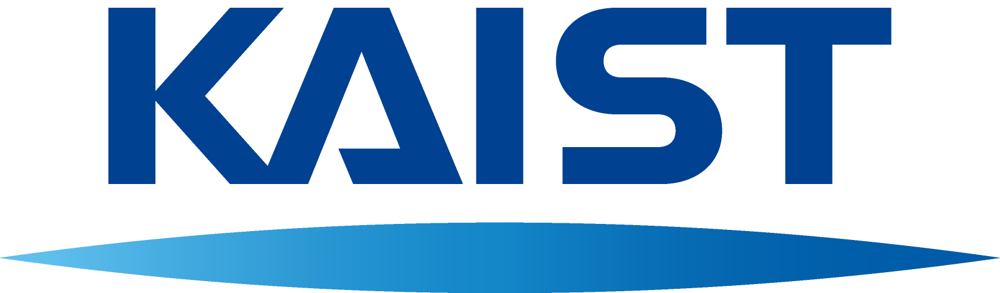

1일차 · 09:00 시작문제에서 프로토타입으로
- 우운택 센터장 Symbiotic AIR 기본 설명1시간
- 센터 연구원 라이브러리·기본 프레임워크 설명2시간
- 점심
- 2인 1팀 자유 개발5시간 이상

KAIST KI-ITAIC증강현실연구센터 · ARRC
Symbiotic AIR4BTS · 2026–2027 Winter Research Talent Program
서로를 더 잘 이해하도록 돕는 기술을 함께 만듭니다. 1:1 대면 대화에서 도움이 필요한 순간을 찾아 XR·AI 아이디어를 제안하고, 센터가 구성한 2인 1팀으로 이틀간 프로토타입을 개발합니다. 우수 참가자에게는 최대 2개월 KAIST 연구 인턴십 기회를 제공합니다.
경험을 포착하고, 다시 더 나은 경험으로. 해커톤은 센터 연구 비전의 작은 출발점입니다.
AIR는 필요한 현실 증거를 포착하고, AMI는 맥락·목표·행동·결과를 기억합니다. BTS는 이 경험 자산을 새로운 사람·공간·시간·과업에 맞게 적용합니다. 실제 도움과 부담을 평가해 다음 지원을 개선하는 것이 AIR4BTS의 연구 순환입니다.
한 사람·공간·시간·과업이 만나는 실제 장면에서, 연구할 만한 질문과 관찰 가능한 단서를 찾습니다.
말·시선·제스처·공간의 증거를 바탕으로 경험모델과 재사용 가능한 XR 자산을 설계합니다.
짧은 기간에 실제 연구문제를 발견하고 최소 프로토타입을 구현·시연·검증합니다.
검증한 경험을 모델·XR 자산·후속 연구로 발전시키며 새로운 분야를 함께 개척할 인재를 육성합니다.
증거 포착, 맥락과 결과의 기억, 새 상황에 적용, 평가와 개선의 순환을 보여줍니다.
재생과 전이의 차이, 적용 가능성 확인, 사람·장소·과업에 맞춘 조정과 검증을 살펴보세요.
목적·권리에 맞는 정보 선택과 주변인의 프라이버시, 지원을 제한하거나 멈추는 판단을 설명합니다.
자료는 장기 연구 비전을 포함합니다. 이번 해커톤에서는 1:1 대면 대화의 한 장면을 선택해 작은 프로토타입으로 도움을 검증합니다.
같은 공간의 두 사람이 대화하는 한 장면에서 시작합니다. 상대의 배경과 목표에 맞춘 도움이 이해와 과업 수행을 개선하는지 확인하세요.
수집·활용할 정보는 목적과 참여자의 권리에 맞게 선택합니다.
| 대화 상황 | 1Audio-first카메라 + 오디오 · 디스플레이 없음예: Ray-Ban Meta ↗ | 2Lightweight카메라 + 작은 디스플레이예: Rokid AR Glasses ↗ | 3Immersive카메라 + 몰입형 디스플레이예: Meta Quest 3 ↗ |
|---|---|---|---|
| A업무·연구 회의목표를 가진 논의 | A×1 | A×2 | A×3 |
| B개인 논의일반적인 논의 | B×1 | B×2예시 | B×3 |
| C강의·주문 받기일방향이 강조된 상황 | C×1 | C×2 | C×3 |
상황과 기기는 자유롭게 조합합니다. 제출할 때 “B × 2”처럼 고른 칸을 반드시 명시하세요.
대화 중 낯선 용어나 배경지식을 짧게 알려주고, 함께 확인할 관련 정보를 제시합니다.
예: 설명을 듣는 중 핵심 개념과 참고 정보를 확인하기이미지·도식·공간적 표시 등으로 대화의 대상을 보여주고 서로의 이해를 돕습니다.
예: 설명하는 대상이나 관계를 그림·표시로 함께 이해하기대화를 이어가고 결정하는 과정은 사람에게 남겨 둡니다. 동의한 피드백은 다음 지원의 시점과 방식을 더 적절하게 만듭니다.
예: 지원이 유용했는지 확인하고 다음 대화에서 더 나은 방식으로 제안하기핵심 연구질문: 어떤 지원을, 누구에게, 언제 제공해야 대화 흐름을 해치지 않으면서 도움이 될까요? 예시 외의 아이디어도 자유롭게 제안할 수 있습니다.
아이디어 1장 + 300자 안팎 요약문
온라인 공모로 시작해, 현장 해커톤에서 구현·검증하고, 우수 참가자는 인턴 연구로 이어갑니다.
온라인 공모를 바탕으로 센터가 2인 1팀을 구성합니다. 센터가 제공하는 것:
이틀 동안 개발에만 집중하도록 센터가 지원하고, 우수 참가자에게는 KAIST에서 연구를 이어갈 기회를 드립니다.
센터 연구원의 개발·연구 지원, 아이디어 구현을 위한 라이브러리·기본 프레임워크 제공
개발용 기기·컴퓨터, AI 계정과 연구·개발에 필요한 AI 도구. 기기별 기능·수량과 지원 범위는 참가자에게 별도 안내
외부 대학 참가자 숙박 지원 예정 · 세부 조건은 확정 후 안내
학부생의 적극적인 참여를 장려하기 위해 등록비 할인 혜택을 제공합니다.
아이디어는 문제 이해, 사용자와 상황의 구체성, AR/XR 활용의 적합성, 독창성, 실현 가능성을 중심으로 평가합니다. 하드웨어 사양보다 대화 상황에서 어떤 도움을 언제 제공하는지와 그 이유를 중요하게 봅니다.